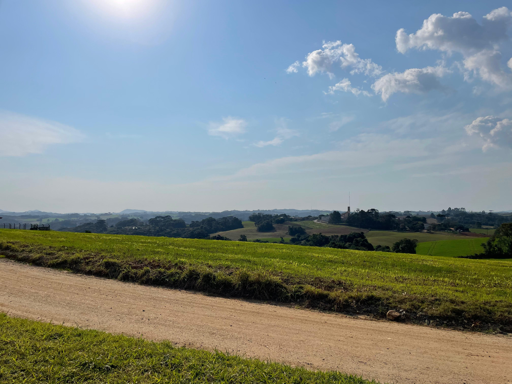

No contexto do Êxodo Rural, o Brasil foi bastante explorado! Principalmente na segunda metade do século XX. Esse crescimento fez com que o território nacional ganhasse uma grande massa da população do perímetro rural, acontecendo em escala imensa o êxodo rural e a favelização na área urbana na década de 1970! Na década da terceira Copa do Mundo brasileira o nosso país se tornou oficialmente um país urbanizado, porém com a ausência de planejamento para o fluxo de população proveniente das áreas rurais, em consequência à essa massa de pessoas, houve uma grande falta de moradias, aumento da vulnerabilidade social e da violência. Esse problema social deu uma acentuação imensa para problemas ambientais urbanos, assim fazendo com que diversas pessoas ficassem desempregadas e perdessem qualidade vida.
As principais consequências dessa ocupação em locais urbanos foi a criação de favelas, que atualmente tem sido grande alvo de tráficos de intorpecentes/drogas, mercado informal, criação de facções em várias regiões e aumento da violência. Outro problema extremo é a educação e oportunidades, a educação ficou totalmente em segundo plano com o êxodo rural! É perceptível como a meritocracia atinge pouquíssimas pessoas na área de favelas ou perímetro rural.
As histórias governamentais e suas negligências vem sido palco importante para essa ausência de Sustentabilidade no campo, o que fraca infra-estruturas no perímetro rural do país! Resultado disso é o pouquissímo investimento em saneamento básico, energia elétrica, estudo de qualidade, água potável, infraestrutura básica e asfaltamento. O histórico de falta desse investimento é muito forte principalmente pela mão-de-obra brasileira ser totalmente desvalorizada.
Ademais, as negligências de ensino público de qualidade nos perímetros rurais tornaram-se um dos maiores problemas para população semianalfabeta e com dificuldades, sendoligeiramente esquecida por causa da falta de acesso a informação que possuem. Isso afeta diretamente nas estatísticas da população, votação em canditados para cargos políticos, conhecimento geral, diminuição do IDH, e infelizmente uma das nossas situações mais precárias é como será o futuro do Brasil, será que ser um país de primeiro mundo é uma utopia para o povo brasileiro? O Brasil é cheio de defeitos no quesito política, social, economia, educação e diversos outros. Resolver isso é algo que vai demorar muito.
No vídeo acima podemos notar uma leve pedalada que demonstra como não há NENHUM poste de iluminação ou que passe fios de luz para outras regiões.
Consequentemente, com a falta de investimento o governo nas áreas de perímetro rural, a qualidade de vida as pessoas, mais conhecidas como "caipira", é muito inferior em comparação à uma pessoa urbana! Pois, com a falta de saúde e saneamento básico afeta significativamente a desigualdade social, agindo de uma forma horrível, com muitos casos de mortes por causa dessa negligência que já está incrimentada na nossa sociedade.
Um fato importante que muitos lugares sente é a estrutura, infelizmente com a atual administração e já não tendo um hitórico dos melhores, o nosso Brasil consegue ser uma utopia no fator de economia e social! E não são poucos exemplos que podemos citar. Ainda há esperanças que podemos mudar isso...